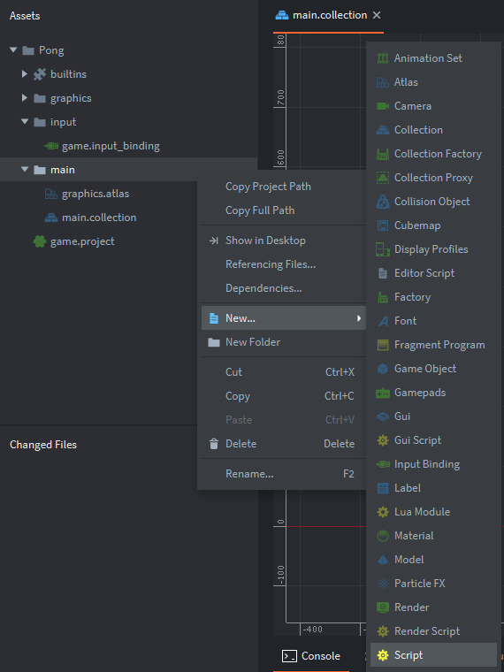
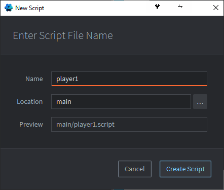
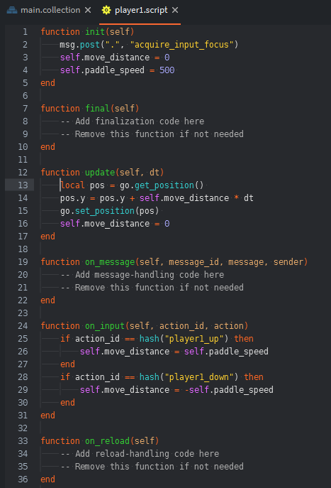
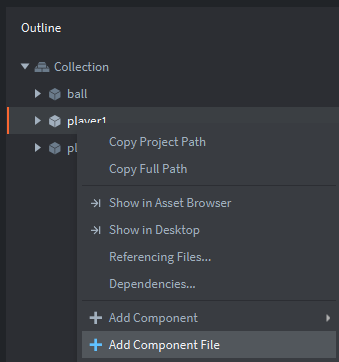

Tutorials for 2D games projects
Pong | Creating the player 1 script for moving the paddle.
Setting the key binding just tells Defold which keys you are going to use and names an action for them. To get the inputs working we need to write some code, called a script in Defold.
- In the assets panel, right click the folder 'main' and choose 'New...', 'Script'.

- Name the script, 'player1' and click 'Create Script'.

- Defold will create a file called 'player1.script' inside the 'main' folder and add some boilerplate code. This just saves you time entering the lifetime functions that all game objects have. Remember that the assets panel is just a file explorer. What you have done in this step is simply create a file inside a folder and put some text into it. You could have done this using Windows Notepad if you really wanted to. The script is not attached to our game yet.
- Before we go any further it is worth exploring what each of the lifetime functions are for:
- int() - Any code that you want to run immediately when the object is spawned goes here. This function is used for initialising object properties and variables.
- final() - Any code that you want to execute before the object is removed from the game goes here. For example, when it is despawned.
- update() - This is the main game loop for this object. Code in this function executes repeatedly as fast as the processor can manage. This function is where code to move the object goes.
- on_message() - Object properties, variables and functions are encapsulated. In object oriented programming each object interacts with another by sending messgages to it. This function is where we write code to respond to messages the object receives when events happen in the game. For example when the object collides with another.
- on_input() - This is where we write code to respond to the player inputs.
- on_reload() - Used for debugging purposes. Defold features "live updates". You don't need to stop the game running and recompile the code every time you want to change it. Instead you can keep the game running and simply reload it after you have made a change to the code. This is often quicker. Code in this function will execute when the game is reloaded. A handy place to change an object's variable at run-time and see its impact immediately.
- Add code to the init function to initialise the player1 object when it spawns.
function init(self)
msg.post(".", "acquire_input_focus")
self.move_distance = 0
self.paddle_speed = 500
endA message is sent to the current script messager to tell it that inputs are processed by this script.
A move_distance attribute is assigned to 0. This is how far the paddle will move in this frame.
The paddle_speed attribute is assigned to 500. This is the speed the paddle can move. We use an attribute for paddle speed so that we can change it in code later if we want to. For example, a power-up may enable our paddle to move more quickly or our opponents paddle to move more slowly. To make this happen we can just change the paddle_speed attribute.
self is an array of attributes belonging to this object. In addition to properties such as X and Y that we set in a previous step, it can also have encapsulated attributes. We want these to be available in the function, so they are passed in as a parameter. This is a special kind of array called an associative array or dictionary. Instead of retrieving elements by an index, we can retrieve them by an attribute name called a key.
- Add code to the on_input function to set the distance to move the paddle if W or S are pressed.
function on_input(self, action_id, action)
if action_id == hash("player1_up") then
self.move_distance = self.paddle_speed
end
if action_id == hash("player1_down") then
self.move_distance = -self.paddle_speed
end
end- self - the attributes of the object.
- action_id - the hashed name of the action set up in the input bindings.
- action - a list of useful data about the action such as whether the input was pressed, released, mouse position etc.
If the action_id is player1_up (we set this in the previous stage) then it assigns the move_distance to be the paddle_speed. Positive for going up the screen and negative for going down the screen.
hash() is used quite a lot in Defold. It's a hashing function. It converts a string of characters into a single 64 bit integer. Comparing integers in IF statements is much quicker for the CPU than comparing characters in a string. It's one of those little performance boosts to maximise frame rate by reducing CPU cycles needed. When we set the keyboard bindings in the previous step, the action label we entered as a string was converted to an integer by Defold using a hashing function. This has been abstracted to us as a programmer. Therefore when we want to refer to this action we need to hash the label first.
- Add code to the update function to move the paddle.
function update(self, dt)
local pos = go.get_position()
pos.y = pos.y + self.move_distance * dt
go.set_position(pos)
self.move_distance = 0
endThe update function takes two parameters:
- self - the attributes of the object.
- dt - the delta time.
Local variables are declared with the keyword, 'local'. pos is a variable that holds the vector of the game object (player1) retrieved using the get_position() method.
The y position is changed to the current position plus move_distance multipled by the delta time.
The new position of the game object is set using the set_position() method.
Code executes at different speeds on different processors. This means that if we set the move_distance to be 10 pixels, then on one processor it might do this 30 times a second (moving 300 pixels), and on a faster processor 60 times a second (moving 600 pixels). The game will be too slow on older computers and unplayable on newer computers! To get around this problem we always multiply movement distances by delta time. That is the elapsed time between the previous frame and the current frame. This ensures a consistent game speed irrespective of the processor capability. Your game will run just the same at home or school.
Your code editor should now look like this:

Finally we need to attach this code to our player1 game object. Remember at the moment all we have done is put text in a file. We could have done all this in Notepad, but the IDE makes it easier with boilerplate code, syntax checking, colouring and indenting.
- Save your project at this stage by pressing CTRL-S or choosing 'File', 'Save All'.
- In the assets panel, in the 'main' folder, double click 'main.collection'. You should see the game canvas in the editor panel in the middle of the screen.
- In the outline panel, right click the player1 game object and choose, 'Add Component File'.

- Choose /main/player1.script and click OK.
- Save the changes by pressing CTRL-S or 'File', 'Save All'.
- Run the program by pressing F5 or choosing, 'Debug', 'Start / Attach' from the menu bar.

If everything is working you should be able to use W and S to move player 1's paddle up and down. It will leave the screen if you go too far because we haven't stopped this happening yet in the script.
Now that the script is attached to the player1 object we can repeat the process for player 2. Stage 5b >
 Craig'n'Dave | Version 1.3
Craig'n'Dave | Version 1.3